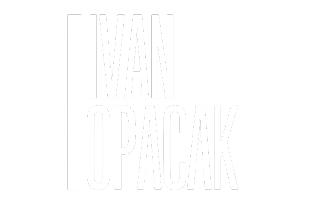

<div class="wrapper" id="wrapper" *ngIf="!projectsOpend">
  <div class="sidebar menü ivan-menü dark" [ngStyle]="{'transform': sideBarTranslation}">
    <div class="inner-content">
      <div class="top">
        <div class="img-wrapper">
          
        </div>
      </div>
      <div class="mid">
        <ul class="items">
          <li id="home" [ngClass]="{'active': ngClasses.home.active, 'theme-relative': true}" (click)="navigateToHome()"
            [style.color]="ngClasses.home.active ? currentTheme : 'white'">
            <i class="fa fa-home" aria-hidden="true" [style.color]="ngClasses.home.active ? currentTheme : 'white'"></i>
            <p>Home</p>
          </li>
          <li id="portfolio" [ngClass]="{'active': ngClasses.portfolio.active, 'theme-relative': true}"
            (click)="navigateToPortfolio()" [style.color]="ngClasses.portfolio.active ? currentTheme : 'white'">
            <i class="fa-solid fa-laptop-code" [style.color]="ngClasses.portfolio.active ? currentTheme : 'white'"></i>
            <p>Portfolio</p>
          </li>
          <li id="ich" [ngClass]="{'active': ngClasses.ich.active, 'theme-relative': true}" (click)="navigateToIch()"
            [style.color]="ngClasses.ich.active ? currentTheme : 'white'">
            <i class="fa-solid fa-circle-user" [style.color]="ngClasses.ich.active ? currentTheme : 'white'"></i>
            <p>Ich</p>
          </li>
          <li (click)="redirectToGithub()">
            
            <p>Github</p>
          </li>
        </ul>
      </div>
      <div class="btm">
        <p>Alle Projekte <br> im <b class="theme-relative" [style.color]="currentTheme">Überblick!</b></p>
      </div>
    </div>
  </div>

  <div class="right-content">
    <router-outlet></router-outlet>
  </div>

  <div class="settings">
    <div class="btn" (click)="settingsClicked()">
      <i class="fas fa-gear "></i>
    </div>
    <div class="content">
      <div class="colors" id="colors">
        <div class="color purple" (click)="changeTheme('#9b5adb')"></div>
        <div class="color green" (click)="changeTheme('#58DF52 ')"></div>
        <div class="color blue" (click)="changeTheme('#00CD92')"></div>
        <div class="color orange" (click)="changeTheme('#F97119')"></div>
      </div>
    </div>
  </div>

  <div class="social-media">
    <a href="mailto:ivan.opacak@realschule-traunreut.de" [style.color]="currentTheme">
      <i class="fa-solid fa-envelope"></i>
    </a>
    <a href="tel:5551234567" [style.color]="currentTheme">
      <i class="fa-solid fa-phone"></i>
    </a>
  </div>

  <div class="mobile-open-sidebar" (click)="toggleMobileSidebar()">
    <i class="fa-solid fa-bars" *ngIf="mobileSidebarClosed"></i>
    <i class="fa-solid fa-x" *ngIf="!mobileSidebarClosed"></i>
  </div>

</div>

<div class="wrapper-2" *ngIf="projectsOpend">
  <router-outlet></router-outlet>
</div>